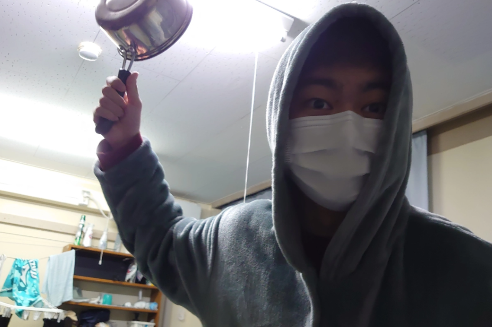

News
WHAT'S コブシプロジェクト
Show More >
コブシプロジェクト
～思考の壁をぶっ壊せ～
新しい活動や企画にチャレンジしたいという個人･団体に対し、学生の立場･視線から資金のみならず、プロジェクトごとに担当役員を設置しあらゆる形で全面的に支援し、新規活動の発掘・育成を実施します。
コブシを突き上げたその先へ
いきなりですが皆様のコブシは何のためにあると思いますか?単なるジャンケンの道具?はたまた人を攻撃するための手段?違います。未来に向けて突き上げるものです。今回一関高専学生会によって行われるコブシプロジェクトの一環として行われる当プロジェクト。私たちも未来へ向けて拳を突き上げてみました。皆様もその拳の行く先を見てみませんか?
Show More >
団体紹介
Show More >

映像研究会
PR動画を作成することで地域活性化につなげる。
一関高専や一関市のホームページ・Youtubeへの掲載を目指す。
ITs Information Technology
web、AI、IoTを中心に｢アイデアを形に。｣をモットーに
多様なアイデアを実装する。
IoT技術を用いたセンシングモジュールの開発と
サイネージ生成および体験会実施
電子楽器｢Analog2.0｣の作成と演奏体験の実施
サイネージ生成および体験会実施
電子楽器｢Analog2.0｣の作成と演奏体験の実施
センシングモジュール等を作成し、学生の技術や知識で学生が｢できること｣を示し、学生の持つ可能性を意識してもらう。
一関高専60年つながるプロジェクト
高専60周年の記念局開設を最終目標として、
無線通信コンテストへの出場や体験局の設置を行う。